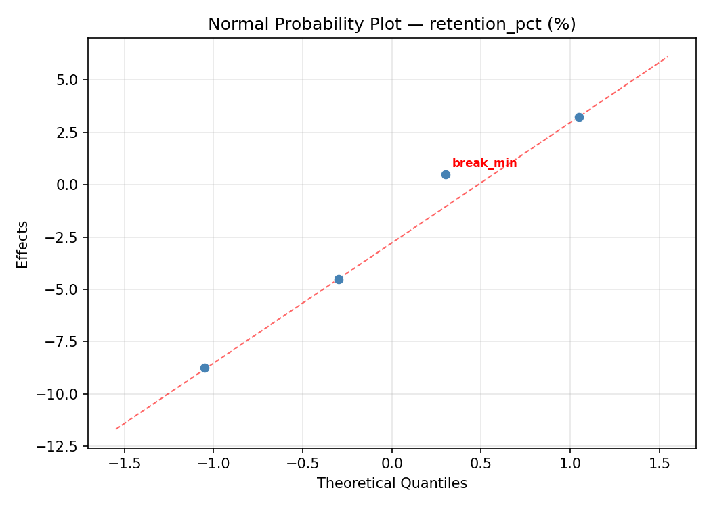
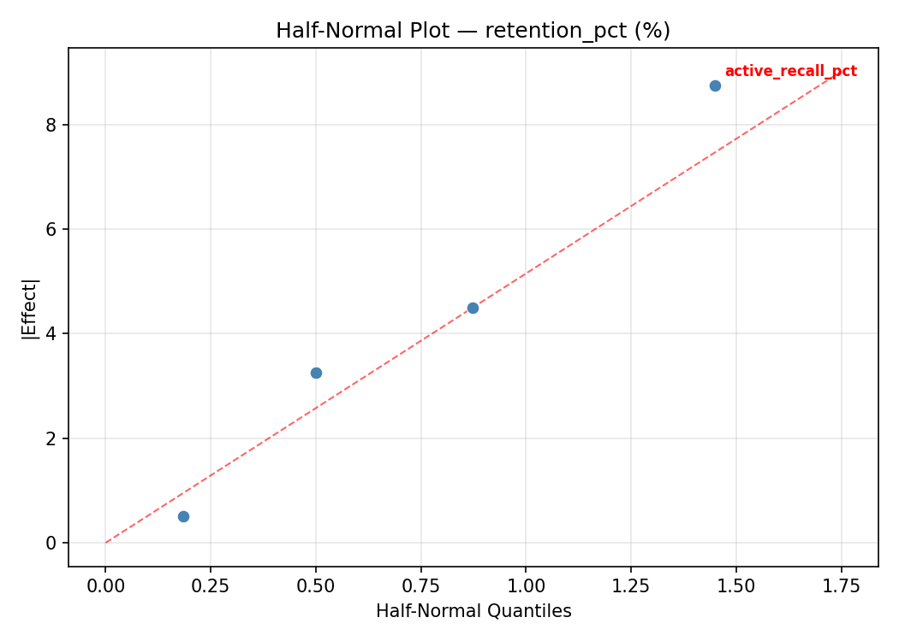
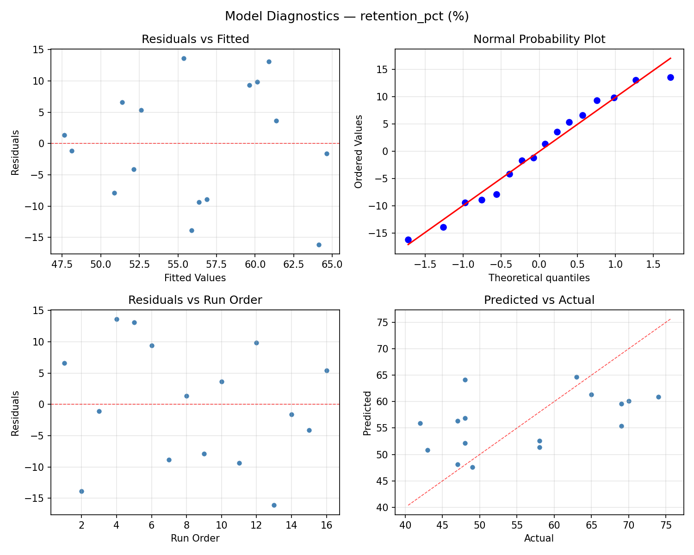
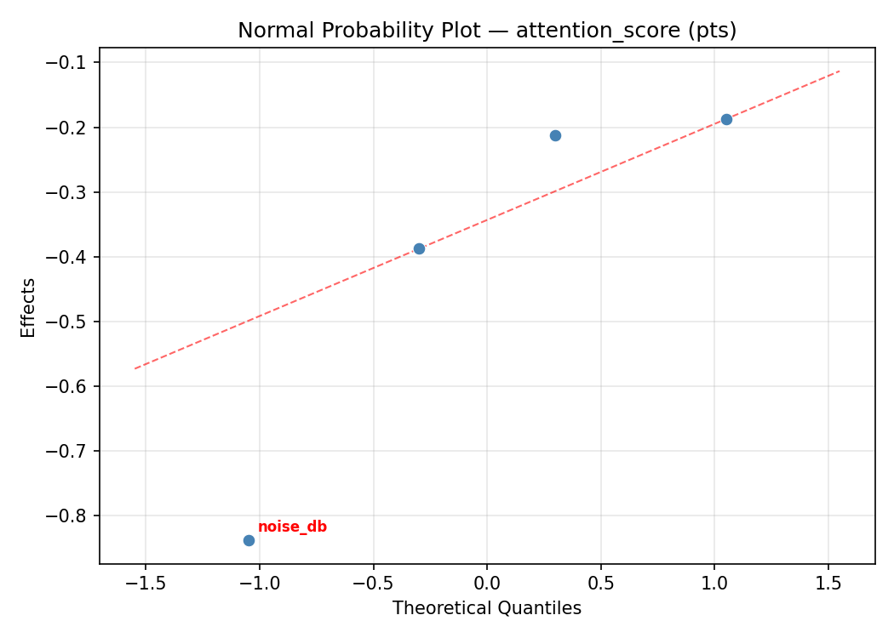
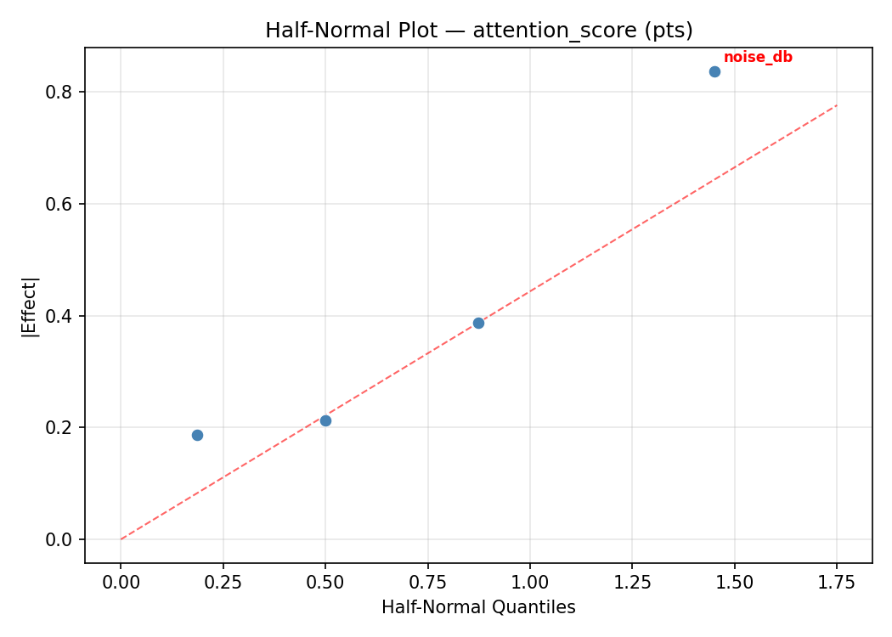
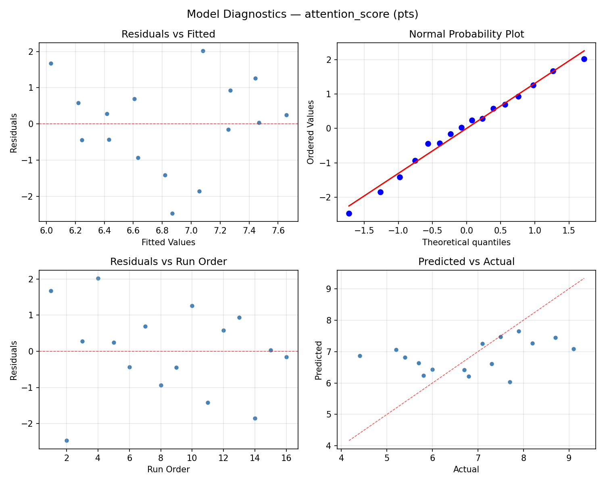

Summary
This experiment investigates study session optimization. Full factorial of study block length, break duration, technique, and environment noise level for retention and attention span.
The design varies 4 factors: block min (min), ranging from 15 to 50, break min (min), ranging from 3 to 15, active recall pct (%), ranging from 0 to 100, and noise db (dB), ranging from 25 to 65. The goal is to optimize 2 responses: retention pct (%) (maximize) and attention score (pts) (maximize). Fixed conditions held constant across all runs include subject = biology, total hours = 3.
A full factorial design was used to explore all 16 possible combinations of the 4 factors at two levels. This guarantees that every main effect and interaction can be estimated independently, at the cost of a larger experiment (16 runs).
Quadratic response surface models were fitted to capture potential curvature and factor interactions. The RSM contour plots below visualize how pairs of factors jointly affect each response.
Key Findings
For retention pct, the most influential factors were active recall pct (35.2%), noise db (31.5%), break min (29.6%). The best observed value was 74.0 (at block min = 50, break min = 3, active recall pct = 100).
For attention score, the most influential factors were active recall pct (36.8%), break min (25.7%), noise db (22.9%). The best observed value was 9.1 (at block min = 50, break min = 15, active recall pct = 100).
Recommended Next Steps
- Consider whether any fixed factors should be varied in a future study.
Experimental Setup
Factors
| Factor | Low | High | Unit |
|---|
block_min | 15 | 50 | min |
break_min | 3 | 15 | min |
active_recall_pct | 0 | 100 | % |
noise_db | 25 | 65 | dB |
Fixed: subject = biology, total_hours = 3
Responses
| Response | Direction | Unit |
|---|
retention_pct | ↑ maximize | % |
attention_score | ↑ maximize | pts |
Configuration
{
"metadata": {
"name": "Study Session Optimization",
"description": "Full factorial of study block length, break duration, technique, and environment noise level for retention and attention span"
},
"factors": [
{
"name": "block_min",
"levels": [
"15",
"50"
],
"type": "continuous",
"unit": "min"
},
{
"name": "break_min",
"levels": [
"3",
"15"
],
"type": "continuous",
"unit": "min"
},
{
"name": "active_recall_pct",
"levels": [
"0",
"100"
],
"type": "continuous",
"unit": "%"
},
{
"name": "noise_db",
"levels": [
"25",
"65"
],
"type": "continuous",
"unit": "dB"
}
],
"fixed_factors": {
"subject": "biology",
"total_hours": "3"
},
"responses": [
{
"name": "retention_pct",
"optimize": "maximize",
"unit": "%"
},
{
"name": "attention_score",
"optimize": "maximize",
"unit": "pts"
}
],
"settings": {
"operation": "full_factorial",
"test_script": "use_cases/113_study_habit/sim.sh"
}
}
Experimental Matrix
The Full Factorial Design produces 16 runs. Each row is one experiment with specific factor settings.
| Run | block_min | break_min | active_recall_pct | noise_db |
|---|
| 1 | 15 | 15 | 100 | 65 |
| 2 | 50 | 3 | 0 | 65 |
| 3 | 15 | 15 | 0 | 65 |
| 4 | 15 | 15 | 100 | 25 |
| 5 | 50 | 15 | 100 | 25 |
| 6 | 50 | 3 | 100 | 25 |
| 7 | 50 | 15 | 0 | 25 |
| 8 | 50 | 3 | 0 | 25 |
| 9 | 15 | 3 | 0 | 65 |
| 10 | 15 | 3 | 100 | 25 |
| 11 | 50 | 15 | 0 | 65 |
| 12 | 50 | 15 | 100 | 65 |
| 13 | 15 | 15 | 0 | 25 |
| 14 | 50 | 3 | 100 | 65 |
| 15 | 15 | 3 | 0 | 25 |
| 16 | 15 | 3 | 100 | 65 |
Step-by-Step Workflow
1
Preview the design
$ python doe.py info --config use_cases/113_study_habit/config.json
2
Generate the runner script
$ python doe.py generate --config use_cases/113_study_habit/config.json \
--output use_cases/113_study_habit/results/run.sh --seed 42
3
Execute the experiments
$ bash use_cases/113_study_habit/results/run.sh
4
Analyze results
$ python doe.py analyze --config use_cases/113_study_habit/config.json
5
Get optimization recommendations
$ python doe.py optimize --config use_cases/113_study_habit/config.json
6
Multi-objective optimization
With 2 competing responses, use --multi to find the best compromise via Derringer–Suich desirability.
$ python doe.py optimize --config use_cases/113_study_habit/config.json --multi
7
Generate the HTML report
$ python doe.py report --config use_cases/113_study_habit/config.json \
--output use_cases/113_study_habit/results/report.html
Features Exercised
| Feature | Value |
|---|
| Design type | full_factorial |
| Factor types | continuous (all 4) |
| Arg style | double-dash |
| Responses | 2 (retention_pct ↑, attention_score ↑) |
| Total runs | 16 |
Analysis Results
Generated from actual experiment runs using the DOE Helper Tool.
Response: retention_pct
Top factors: active_recall_pct (35.2%), noise_db (31.5%), break_min (29.6%).
ANOVA
| Source | DF | SS | MS | F | p-value |
|---|
| Source | DF | SS | MS | F | p-value |
| block_min | 1 | 1.0000 | 1.0000 | 0.006 | 0.9408 |
| break_min | 1 | 64.0000 | 64.0000 | 0.390 | 0.5595 |
| active_recall_pct | 1 | 90.2500 | 90.2500 | 0.550 | 0.4915 |
| noise_db | 1 | 72.2500 | 72.2500 | 0.441 | 0.5362 |
| block_min*break_min | 1 | 132.2500 | 132.2500 | 0.807 | 0.4103 |
| block_min*active_recall_pct | 1 | 16.0000 | 16.0000 | 0.098 | 0.7673 |
| block_min*noise_db | 1 | 324.0000 | 324.0000 | 1.976 | 0.2188 |
| break_min*active_recall_pct | 1 | 36.0000 | 36.0000 | 0.220 | 0.6591 |
| break_min*noise_db | 1 | 196.0000 | 196.0000 | 1.195 | 0.3241 |
| active_recall_pct*noise_db | 1 | 12.2500 | 12.2500 | 0.075 | 0.7955 |
| Error | 5 | 819.7500 | 163.9500 | | |
| Total | 15 | 1763.7500 | 117.5833 | | |
Pareto Chart

Main Effects Plot

Normal Probability Plot of Effects

Half-Normal Plot of Effects

Model Diagnostics

Response: attention_score
Top factors: active_recall_pct (36.8%), break_min (25.7%), noise_db (22.9%).
ANOVA
| Source | DF | SS | MS | F | p-value |
|---|
| Source | DF | SS | MS | F | p-value |
| block_min | 1 | 0.2756 | 0.2756 | 0.233 | 0.6499 |
| break_min | 1 | 0.8556 | 0.8556 | 0.722 | 0.4342 |
| active_recall_pct | 1 | 1.7556 | 1.7556 | 1.482 | 0.2778 |
| noise_db | 1 | 0.6806 | 0.6806 | 0.575 | 0.4826 |
| block_min*break_min | 1 | 5.6406 | 5.6406 | 4.762 | 0.0809 |
| block_min*active_recall_pct | 1 | 5.1756 | 5.1756 | 4.369 | 0.0909 |
| block_min*noise_db | 1 | 2.0306 | 2.0306 | 1.714 | 0.2474 |
| break_min*active_recall_pct | 1 | 2.0306 | 2.0306 | 1.714 | 0.2474 |
| break_min*noise_db | 1 | 0.9506 | 0.9506 | 0.802 | 0.4114 |
| active_recall_pct*noise_db | 1 | 1.5006 | 1.5006 | 1.267 | 0.3115 |
| Error | 5 | 5.9231 | 1.1846 | | |
| Total | 15 | 26.8194 | 1.7880 | | |
Pareto Chart

Main Effects Plot

Normal Probability Plot of Effects

Half-Normal Plot of Effects

Model Diagnostics

Response Surface Plots
3D surfaces fitted with quadratic RSM. Red dots are observed data points.
attention score active recall pct vs noise db

attention score block min vs active recall pct

attention score block min vs break min

attention score block min vs noise db

attention score break min vs active recall pct

attention score break min vs noise db

retention pct active recall pct vs noise db

retention pct block min vs active recall pct

retention pct block min vs break min

retention pct block min vs noise db

retention pct break min vs active recall pct

retention pct break min vs noise db

Multi-Objective Optimization
When responses compete, Derringer–Suich desirability finds the best compromise.
Each response is scaled to a 0–1 desirability, then combined via a weighted geometric mean.
Overall Desirability
D = 0.8807
Per-Response Desirability
| Response | Weight | Desirability | Predicted | Dir |
|---|
retention_pct |
1.5 |
|
69.00 0.8125 69.00 % |
↑ |
attention_score |
1.5 |
|
9.10 0.9545 9.10 pts |
↑ |
Recommended Settings
| Factor | Value |
|---|
block_min | 15 min |
break_min | 15 min |
active_recall_pct | 0 % |
noise_db | 65 dB |
Source: from observed run #4
Trade-off Summary
Sacrifice = how much worse than single-objective best.
| Response | Predicted | Best Observed | Sacrifice |
|---|
attention_score | 9.10 | 9.10 | +0.00 |
Top 3 Runs by Desirability
| Run | D | Factor Settings |
|---|
| #5 | 0.8304 | block_min=50, break_min=15, active_recall_pct=0, noise_db=25 |
| #10 | 0.7830 | block_min=50, break_min=15, active_recall_pct=0, noise_db=65 |
Model Quality
| Response | R² | Type |
|---|
attention_score | 0.5087 | linear |
Full Multi-Objective Output
============================================================
MULTI-OBJECTIVE OPTIMIZATION
Method: Derringer-Suich Desirability Function
============================================================
Overall desirability: D = 0.8807
Response Weight Desirability Predicted Direction
---------------------------------------------------------------------
retention_pct 1.5 0.8125 69.00 % ↑
attention_score 1.5 0.9545 9.10 pts ↑
Recommended settings:
block_min = 15 min
break_min = 15 min
active_recall_pct = 0 %
noise_db = 65 dB
(from observed run #4)
Trade-off summary:
retention_pct: 69.00 (best observed: 74.00, sacrifice: +5.00)
attention_score: 9.10 (best observed: 9.10, sacrifice: +0.00)
Model quality:
retention_pct: R² = 0.1983 (linear)
attention_score: R² = 0.5087 (linear)
Top 3 observed runs by overall desirability:
1. Run #4 (D=0.8807): block_min=15, break_min=15, active_recall_pct=0, noise_db=65
2. Run #5 (D=0.8304): block_min=50, break_min=15, active_recall_pct=0, noise_db=25
3. Run #10 (D=0.7830): block_min=50, break_min=15, active_recall_pct=0, noise_db=65
Full Analysis Output
=== Main Effects: retention_pct ===
Factor Effect Std Error % Contribution
--------------------------------------------------------------
active_recall_pct -4.7500 2.7109 35.2%
noise_db -4.2500 2.7109 31.5%
break_min -4.0000 2.7109 29.6%
block_min 0.5000 2.7109 3.7%
=== ANOVA Table: retention_pct ===
Source DF SS MS F p-value
-----------------------------------------------------------------------------
block_min 1 1.0000 1.0000 0.006 0.9408
break_min 1 64.0000 64.0000 0.390 0.5595
active_recall_pct 1 90.2500 90.2500 0.550 0.4915
noise_db 1 72.2500 72.2500 0.441 0.5362
block_min*break_min 1 132.2500 132.2500 0.807 0.4103
block_min*active_recall_pct 1 16.0000 16.0000 0.098 0.7673
block_min*noise_db 1 324.0000 324.0000 1.976 0.2188
break_min*active_recall_pct 1 36.0000 36.0000 0.220 0.6591
break_min*noise_db 1 196.0000 196.0000 1.195 0.3241
active_recall_pct*noise_db 1 12.2500 12.2500 0.075 0.7955
Error 5 819.7500 163.9500
Total 15 1763.7500 117.5833
=== Interaction Effects: retention_pct ===
Factor A Factor B Interaction % Contribution
------------------------------------------------------------------------
block_min noise_db 9.0000 31.6%
break_min noise_db 7.0000 24.6%
block_min break_min -5.7500 20.2%
break_min active_recall_pct -3.0000 10.5%
block_min active_recall_pct -2.0000 7.0%
active_recall_pct noise_db -1.7500 6.1%
=== Summary Statistics: retention_pct ===
block_min:
Level N Mean Std Min Max
------------------------------------------------------------
15 8 55.8750 10.8290 43.0000 74.0000
50 8 56.3750 11.5997 42.0000 70.0000
break_min:
Level N Mean Std Min Max
------------------------------------------------------------
15 8 58.1250 10.3156 43.0000 70.0000
3 8 54.1250 11.6795 42.0000 74.0000
active_recall_pct:
Level N Mean Std Min Max
------------------------------------------------------------
0 8 58.5000 12.9284 42.0000 74.0000
100 8 53.7500 8.4811 47.0000 69.0000
noise_db:
Level N Mean Std Min Max
------------------------------------------------------------
25 8 58.2500 11.5109 42.0000 74.0000
65 8 54.0000 10.4471 43.0000 70.0000
=== Main Effects: attention_score ===
Factor Effect Std Error % Contribution
--------------------------------------------------------------
active_recall_pct 0.6625 0.3343 36.8%
break_min -0.4625 0.3343 25.7%
noise_db -0.4125 0.3343 22.9%
block_min 0.2625 0.3343 14.6%
=== ANOVA Table: attention_score ===
Source DF SS MS F p-value
-----------------------------------------------------------------------------
block_min 1 0.2756 0.2756 0.233 0.6499
break_min 1 0.8556 0.8556 0.722 0.4342
active_recall_pct 1 1.7556 1.7556 1.482 0.2778
noise_db 1 0.6806 0.6806 0.575 0.4826
block_min*break_min 1 5.6406 5.6406 4.762 0.0809
block_min*active_recall_pct 1 5.1756 5.1756 4.369 0.0909
block_min*noise_db 1 2.0306 2.0306 1.714 0.2474
break_min*active_recall_pct 1 2.0306 2.0306 1.714 0.2474
break_min*noise_db 1 0.9506 0.9506 0.802 0.4114
active_recall_pct*noise_db 1 1.5006 1.5006 1.267 0.3115
Error 5 5.9231 1.1846
Total 15 26.8194 1.7880
=== Interaction Effects: attention_score ===
Factor A Factor B Interaction % Contribution
------------------------------------------------------------------------
block_min break_min -1.1875 24.5%
block_min active_recall_pct 1.1375 23.5%
block_min noise_db 0.7125 14.7%
break_min active_recall_pct 0.7125 14.7%
active_recall_pct noise_db 0.6125 12.6%
break_min noise_db 0.4875 10.1%
=== Summary Statistics: attention_score ===
block_min:
Level N Mean Std Min Max
------------------------------------------------------------
15 8 6.7125 1.3389 5.2000 8.7000
50 8 6.9750 1.4140 4.4000 9.1000
break_min:
Level N Mean Std Min Max
------------------------------------------------------------
15 8 7.0750 1.4695 5.2000 9.1000
3 8 6.6125 1.2449 4.4000 7.9000
active_recall_pct:
Level N Mean Std Min Max
------------------------------------------------------------
0 8 6.5125 1.3943 4.4000 8.7000
100 8 7.1750 1.2792 5.2000 9.1000
noise_db:
Level N Mean Std Min Max
------------------------------------------------------------
25 8 7.0500 1.6160 4.4000 9.1000
65 8 6.6375 1.0596 5.4000 8.2000
Optimization Recommendations
=== Optimization: retention_pct ===
Direction: maximize
Best observed run: #5
block_min = 50
break_min = 3
active_recall_pct = 100
noise_db = 25
Value: 74.0
RSM Model (linear, R² = 0.2794, Adj R² = 0.0173):
Coefficients:
intercept +56.1250
block_min +3.6250
break_min -4.0000
active_recall_pct -1.1250
noise_db +0.6250
RSM Model (quadratic, R² = 0.7878, Adj R² = -2.1828):
Coefficients:
intercept +11.2250
block_min +3.6250
break_min -4.0000
active_recall_pct -1.1250
noise_db +0.6250
block_min*break_min +3.5000
block_min*active_recall_pct +3.6250
block_min*noise_db +2.1250
break_min*active_recall_pct +2.0000
break_min*noise_db +3.0000
active_recall_pct*noise_db -3.6250
block_min^2 +11.2250
break_min^2 +11.2250
active_recall_pct^2 +11.2250
noise_db^2 +11.2250
Curvature analysis:
noise_db coef=+11.2250 convex (has a minimum)
block_min coef=+11.2250 convex (has a minimum)
break_min coef=+11.2250 convex (has a minimum)
active_recall_pct coef=+11.2250 convex (has a minimum)
Notable interactions:
block_min*active_recall_pct coef=+3.6250 (synergistic)
active_recall_pct*noise_db coef=-3.6250 (antagonistic)
block_min*break_min coef=+3.5000 (synergistic)
break_min*noise_db coef=+3.0000 (synergistic)
block_min*noise_db coef=+2.1250 (synergistic)
break_min*active_recall_pct coef=+2.0000 (synergistic)
Predicted optimum (from linear model, at observed points):
block_min = 50
break_min = 3
active_recall_pct = 0
noise_db = 65
Predicted value: 65.5000
Surface optimum (via L-BFGS-B, linear model):
block_min = 50
break_min = 3
active_recall_pct = 0
noise_db = 65
Predicted value: 65.5000
Model quality: Weak fit — consider adding center points or using a different design.
Factor importance:
1. break_min (effect: 8.0, contribution: 42.7%)
2. block_min (effect: 7.2, contribution: 38.7%)
3. active_recall_pct (effect: -2.2, contribution: 12.0%)
4. noise_db (effect: 1.2, contribution: 6.7%)
=== Optimization: attention_score ===
Direction: maximize
Best observed run: #4
block_min = 50
break_min = 15
active_recall_pct = 100
noise_db = 65
Value: 9.1
RSM Model (linear, R² = 0.3263, Adj R² = 0.0814):
Coefficients:
intercept +6.8438
block_min +0.1563
break_min -0.3937
active_recall_pct +0.3688
noise_db +0.4812
RSM Model (quadratic, R² = 0.8217, Adj R² = -1.6752):
Coefficients:
intercept +1.3688
block_min +0.1563
break_min -0.3937
active_recall_pct +0.3688
noise_db +0.4813
block_min*break_min +0.2438
block_min*active_recall_pct +0.8563
block_min*noise_db -0.1562
break_min*active_recall_pct -0.0688
break_min*noise_db -0.0813
active_recall_pct*noise_db -0.0437
block_min^2 +1.3688
break_min^2 +1.3688
active_recall_pct^2 +1.3688
noise_db^2 +1.3688
Curvature analysis:
block_min coef=+1.3688 convex (has a minimum)
break_min coef=+1.3688 convex (has a minimum)
active_recall_pct coef=+1.3688 convex (has a minimum)
noise_db coef=+1.3688 convex (has a minimum)
Notable interactions:
block_min*active_recall_pct coef=+0.8563 (synergistic)
Predicted optimum (from linear model, at observed points):
block_min = 50
break_min = 3
active_recall_pct = 100
noise_db = 65
Predicted value: 8.2438
Surface optimum (via L-BFGS-B, linear model):
block_min = 50
break_min = 3
active_recall_pct = 100
noise_db = 65
Predicted value: 8.2438
Model quality: Weak fit — consider adding center points or using a different design.
Factor importance:
1. noise_db (effect: 1.0, contribution: 34.4%)
2. break_min (effect: 0.8, contribution: 28.1%)
3. active_recall_pct (effect: 0.7, contribution: 26.3%)
4. block_min (effect: 0.3, contribution: 11.2%)